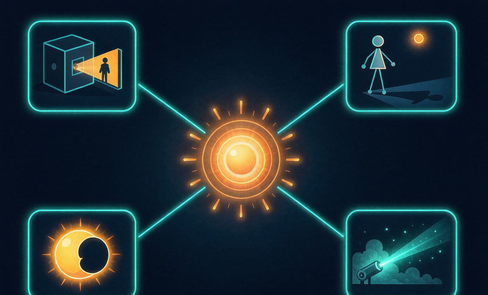
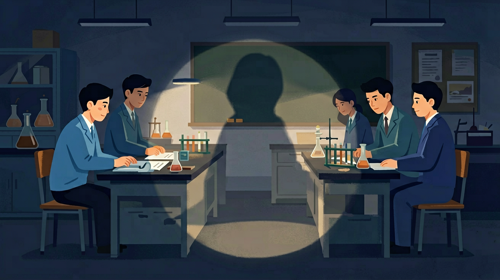
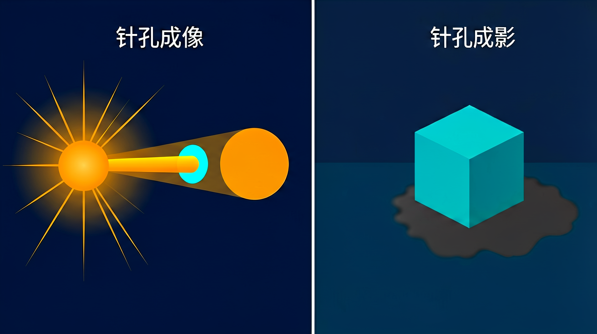

光在同种均匀介质中沿直线传播，小孔成像、影子都与此有关。
对光现象有生活经验。
记混反射/折射规律；虚实像不分。
建立光的直线传播模型并会判断。
❓ 为什么影子有时候大有时候小？
❓ 光真的不会拐弯吗？那为什么能看到拐角后面的东西？
❓ 激光笔的光线为什么看起来是直的？
学完这一课，这些问题你都能自信地回答。
🎯 能说出光的直线传播条件及常见现象
🎯 能判断生活中哪些现象由光的直线传播导致
🎯 能分析影子大小与光源、遮挡物距离的关系
光在同种均匀介质中沿直线传播，由此可以解释影子、日食月食和小孔成像。小孔成像成的是倒立的实像，像的形状由物体决定而与孔的形状无关，这与孔的大小需足够小是理解难点。光在不同介质交界处才会改变方向（反射、折射）。
小孔成像所成的像是？
光在同种均匀介质中沿直线传播，小孔成像、影子都与…
抓住角度/成像关键量
联系生活与实验

And：学生知道阳光下会有影子
But：不清楚影子形状与光的关系
Therefore：通过实验揭示影子的形成条件
当光沿直线传播遇到不透明物体时，会在物体背后形成影子。影子的形状由物体轮廓和光线方向共同决定。例如用手电筒垂直照射直径5cm的圆片，在距离30cm的墙上会形成直径完全相同的圆形影子；若倾斜手电筒45度，影子会变成椭圆形且长轴延长到7cm左右。
🌍 医生做手术用的无影灯，就是通过多个角度光源使光线交叉照射，让器械的影子变淡甚至消失。
下列哪个因素不会改变影子形状？
光在同种均匀介质中沿直线传播，由此产生影子、日食月食和小孔成像。小孔成像成的是倒立的实像，像的形状与孔的形状无关。光在真空中传播速度约为 3×10⁸ m/s，是宇宙中最快的速度。
And：学生见过树荫下的光斑
But：不知道光斑形状与树叶间隙的关系
Therefore：建立小孔成像与光直线传播的联系
光通过极小的孔洞时，由于直线传播特性会在孔后形成倒立的像。实验显示：用针在纸板上扎0.5mm小孔，让烛光通过，在1米外的白纸上会出现高度约3cm的倒立火焰像。孔越小成像越清晰，但亮度会降低。这个现象证明光确实是沿直线传播的。
🌍 古代学者墨子最早记录了这个现象，现代相机镜头就是利用这个原理设计的。
把小孔从1mm扩大到5mm，像会怎样变化？
And：学生会测量影长
But：不会用影子计算高度
Therefore：将现象转化为可测量的数学关系
根据光的直线传播，物体高度与其影长成正比。当太阳光以45度角照射时，6米高的旗杆会投下6米长的影子（tan45°=1）。通过测量已知高度物体（如1米长的尺子）的影子0.8米，可以推算教学楼影子12米对应实际高度是15米（1:0.8=x:12）。
🌍 埃及人就是用这个方法测量金字塔高度的，现在建筑工人仍用此法估算楼层高度。
竹竿和影子长度比为1:0.6时，太阳高度角约为？

💡 按提示调节角度/透镜，观察光路变化。
外链：https://phet.colorado.edu/sims/html/bending-light/latest/bending-light_zh_CN.html
解题先画出从物体端点经小孔（或障碍物边缘）的两条光线，交点或边界就决定了像或影的位置与大小。像与物大小之比等于像距与物距之比。
常见误区：常见误区是认为小孔成像的形状取决于小孔形状，或认为光在任何介质中都沿直线传播（非均匀介质中会弯曲）。
小孔成像所成的像是？
太阳到地球距离约 1.5×10¹¹ m，光速 3×10⁸ m/s，阳光到达地球约需？
光的直线传播的学习重点是
虚像的特点是
光在同种均匀介质中沿直线传播，由此产生影子、日食月食和小孔成像。小孔成像成的是倒立的实像，像的形状与孔的形状无关。光在真空中传播速度约为 3×10⁸ m/s，是宇宙中最快的速度。
（中考题）关于日食成因，正确的是？
医生做手术时用的无影灯，主要克服了光的什么特性？
若想用激光笔给教室投影仪定位，哪个操作无效？
✅ 强调需在均匀介质中
💡 忽略介质条件
✅ 演示光源距离变化实验
💡 未建立三维空间思维
勾选你已掌握的条目。
口诀：光走直线不拐弯，遇阻成影真简单
类比：像排队传篮球，球只能直线传到下个人
解释生活光现象应
用三句话说明光的直线传播最重要的一条规律，并举一例。
复述本课两个核心概念的定义。
用本课方法分析一个新例子。
有同学认为：认为光在任何情况下都直线传播 —— 请说明错在哪里。
有同学认为：混淆影子大小与物体大小的关系 —— 请说明错在哪里。
研究光现象时常用
光学实验应注意